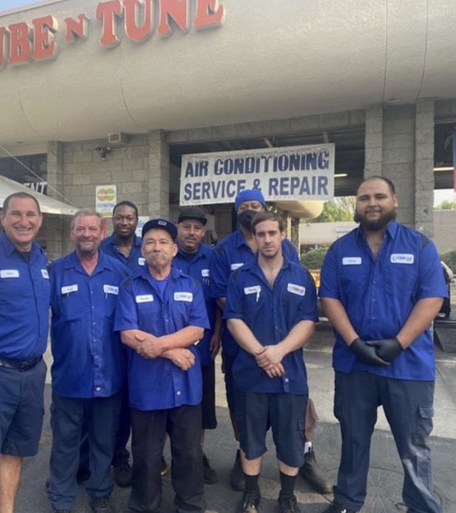
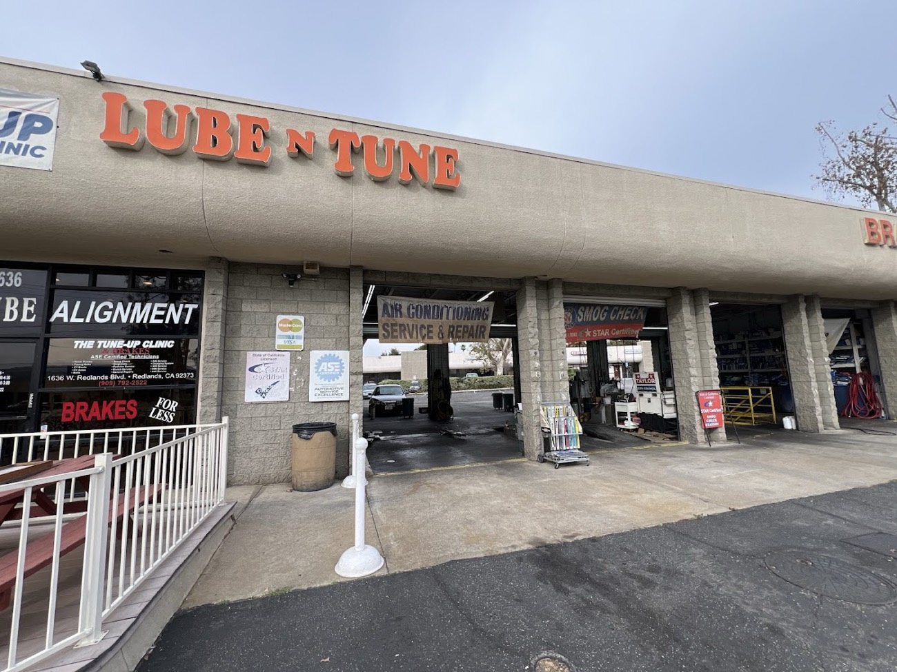
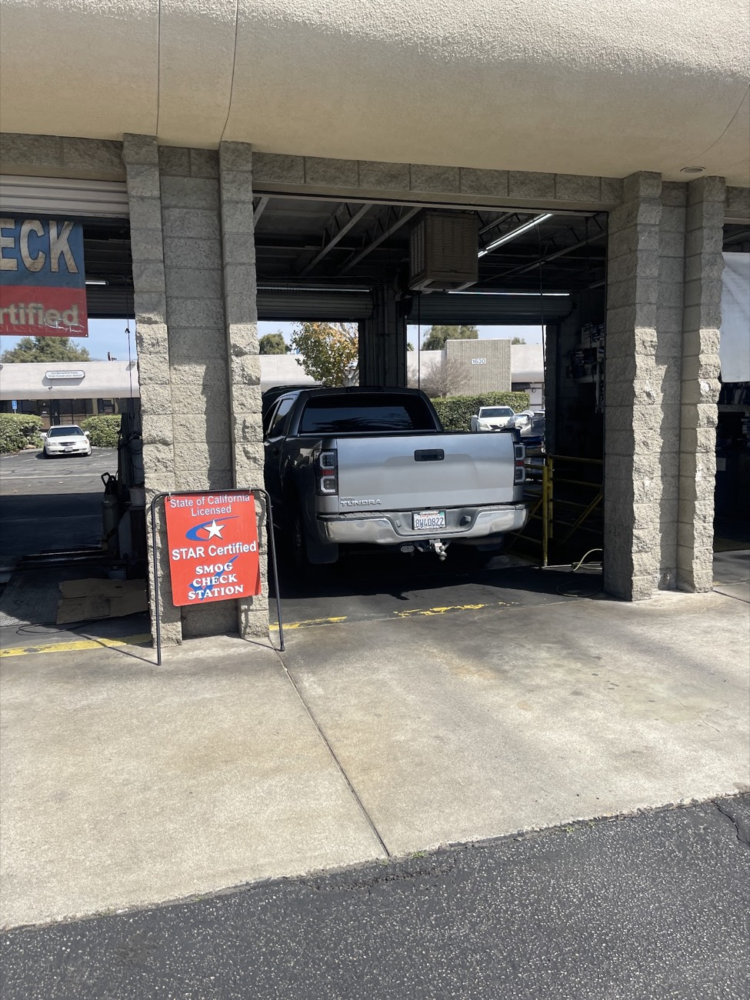
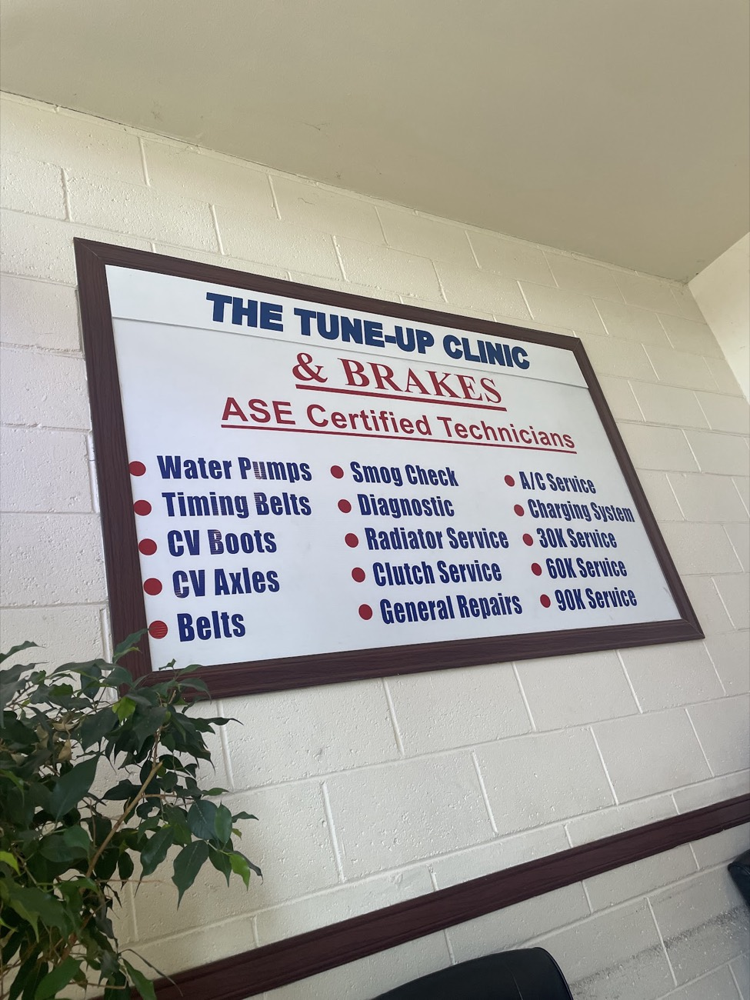
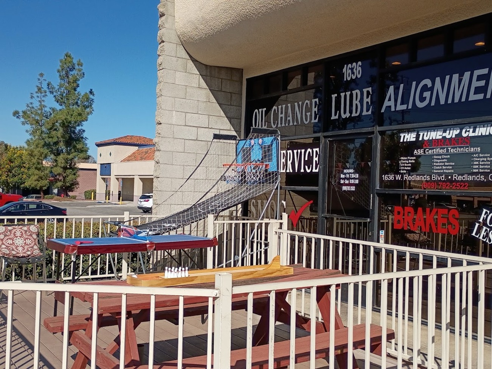
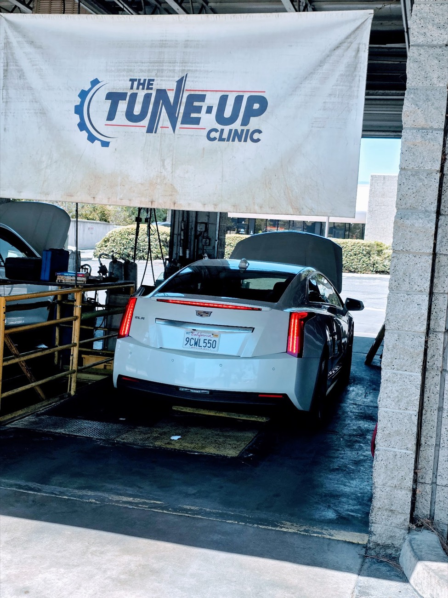

Your friendly neighborhood full service mechanic on W Redlands Blvd. Walk in seven days a week for fast oil changes, STAR certified smog checks and honest repairs, with no upselling.
From a quick oil change to a timing belt, our ASE certified technicians handle it. Pick a service for details and answers to common questions.
Walk in, get out fast. Conventional, blend or synthetic, done right.
Learn more → From $59State-licensed STAR certified smog station. Open 7 days, including Sundays.
Learn more →Pads, rotors, calipers and brake fluid from ASE certified techs.
Learn more →Stop the pulling and protect your tires. Tire rotations too.
Learn more → 30K · 60K · 90KTune-ups and 30K, 60K and 90K mile service, without dealer prices.
Learn more →Diagnosis, repair and recharge. Inland Empire summers are no joke.
Learn more → ASE certifiedDiagnostics, timing belts, water pumps, CV axles, clutches and more.
Learn more →
Some of our customers have been bringing their cars here for 15 years. They come back because of the people: Rick up front, Taylor in the bays, and a crew of ASE certified technicians who tell it straight.
Here’s what Redlands drivers say about us.
“I had been coming to this shop for 15 years until we moved out of state. So after moving back to the area, when I needed an oil change for my truck, it was a no brainer. I trust him and his team. If he says I need it, I need it. This team is friendly, knowledgeable, and honest.”
“They are fast, priced well, and solid guys. There will always be some maintenance that he recommends. And I thought it was just a sales thing, but over the years he has always had solid advice and recommendations… If you have waited an hour for an oil change COME HERE. I never have an appointment.”
“One of the few spots that offer fair prices in this economy. The people are super friendly & they talk you through what needs to be done. Super fast service, in & out for an oil change in less than half an hour.”
“First time here and I am so happy they were able to take me in last minute for an oil change with a great price. The staff was extremely professional and I highly recommend this place.”
Look for the Lube N Tune sign at 1636 W Redlands Blvd.





No. Walk-ins are welcome seven days a week. Call ahead if you want to check the wait.
Mon–Fri 7:30 AM–4:30 PM · Sat–Sun 8 AM–3 PM. We’re open every day of the week.
Yes. We’re a State of California licensed, STAR certified smog check station.
Yes. Our technicians are ASE certified.
1636 W Redlands Blvd, Redlands, CA 92373, right on Redlands Blvd.
Open 7 days on W Redlands Blvd. Call (909) 792-2522 to check the wait.
Address1636 W Redlands Blvd
Redlands, CA 92373
Phone(909) 792-2522
HoursMon–Fri 7:30 AM – 4:30 PM
Sat–Sun 8 AM – 3 PM
Walk-insWelcome every day. No appointment needed.
Get Directions